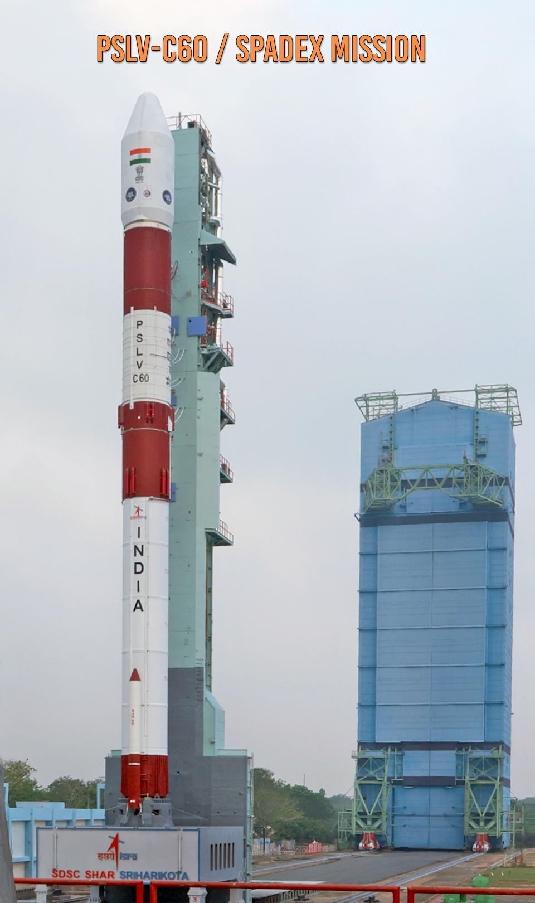
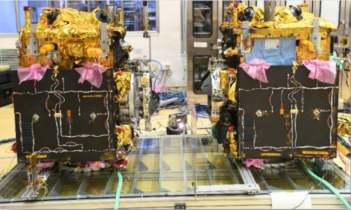
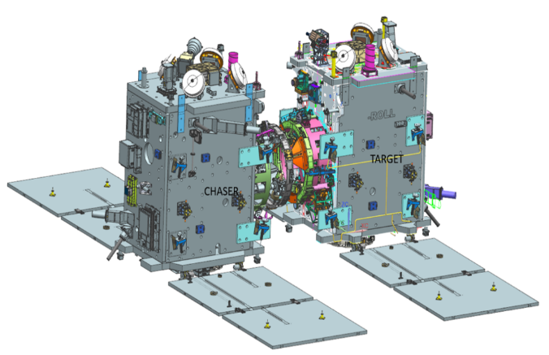

India's Space Docking Experiment — two small spacecraft meeting 470 km above Earth, approaching each other at centimetre precision, and locking together. The capability that makes space stations possible. The technology that makes Chandrayaan-4 possible. India is now the 4th nation to master it.
Watch: SpaDeX Launch LiveSpaDeX — Space Docking Experiment — launched on December 30, 2024, on PSLV-C60 from Sriharikota. Two small spacecraft — a 220 kg Chaser and a 470 kg Target — were placed in a 470 km circular orbit and tasked with finding each other, approaching autonomously, and docking.
In early 2025, the docking was successfully achieved — making India the 4th nation in history to demonstrate autonomous spacecraft docking in orbit, after the USSR (1967), USA (1966), and China (2011). The capability that took the world's most powerful space agencies decades to develop, India built and demonstrated in a fraction of the time and cost.
SpaDeX was explicitly designed as the prerequisite for two future missions: Chandrayaan-4's lunar orbit docking, and the Bharatiya Antariksh Station's assembly and crew vehicle docking. Without SpaDeX, neither mission could proceed. India built the tool before it built the temple.
In SpaDeX, the Chaser (SDX01) is the Active satellite — it performs all orbital manoeuvres, all approach burns, and all final docking movements. The Target (SDX02) is the Passive satellite — it maintains a stable, fixed attitude in orbit and simply waits. This active-passive architecture mirrors real space station docking: the crew vehicle is always the active chaser; the station is always passive. India's docking design is directly applicable to Gaganyaan visiting BAS.
Two spacecraft in orbit are both moving at ~7.8 km/s. For the Active to dock with the Passive, it must match the target's exact orbit, exact velocity, and exact orientation — then approach at centimetres per second.
The approach sequence involves: far-range rendezvous (GPS-guided), close-range approach using ISRO-developed NavIC-based Relative Navigation (RelNav) — where the two spacecraft use NavIC signals to determine their precise position relative to each other, enabling the final 3-metre approach with centimetre accuracy, then laser rangefinder and camera guidance for the last metres, soft capture (docking mechanism contact), and hard dock (structural lock and electrical connection).
The NavIC RelNav system is a major technical achievement in its own right — using India's own navigation constellation not just for positioning on Earth, but for spacecraft-to-spacecraft relative navigation in orbit. A first for ISRO.
Every phase must be autonomous — signals from Earth take too long at docking distances to allow ground control. The spacecraft's onboard computer makes every decision in real time. A wrong manoeuvre at 3 metres separation would destroy both spacecraft and create debris. SpaDeX proved India's guidance, navigation, and control algorithms can execute this flawlessly.
Swipe or click arrows to browse. Click any photo to zoom.

